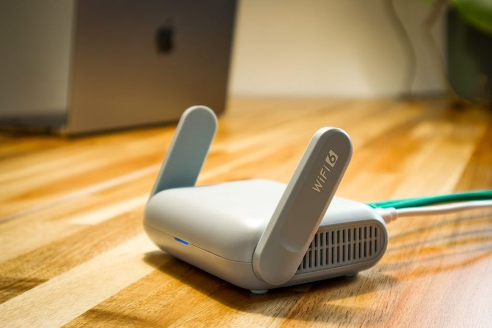

Conexão
Ping, jitter e perda: o que realmente atrapalha na rede móvel
Nem todo problema de conexão é lentidão. Entenda a diferença entre latência, variação e perda de pacote — e o que dá para fazer em cada caso.

- Latência é o atraso; jitter é a variação desse atraso; perda é o pacote que não chega.
- Jitter alto incomoda mais que latência alta e estável.
- Velocidade de download alta não garante partida estável.
Quando algo dá errado na partida, a explicação padrão é "minha internet está ruim". Só que internet ruim é um guarda-chuva para três problemas distintos, com sintomas diferentes e soluções que não se misturam. Saber qual dos três você tem é o que separa o ajuste útil da reclamação genérica.
Velocidade contratada mede quanto dado passa por segundo. Partida online, porém, depende de pacotes pequenos chegando na hora certa, não de volume. É por isso que um plano rápido pode entregar uma experiência ruim e uma conexão modesta e estável pode entregar uma experiência ótima. São métricas diferentes medindo coisas diferentes.
Latência: o atraso de ida e volta
É o tempo entre a sua ação e a resposta do servidor. Latência constante, mesmo que não seja baixíssima, é administrável: o corpo se adapta a um atraso previsível. O problema aparece quando esse atraso muda o tempo todo — e aí já não estamos falando de latência, e sim de jitter.
Jitter: a variação que quebra a previsão
Jitter é a oscilação da latência. Um trecho a 40 ms, outro a 180 ms, outro de volta a 50 ms. O efeito visível é o personagem que "anda sozinho", a ação que parece ter saído e não saiu, o inimigo que aparece deslocado. É o sintoma mais frustrante justamente porque não há como compensar: você não consegue se adaptar a um atraso que muda a cada segundo.
- Sinal fraco de celular faz o aparelho renegociar a conexão o tempo todo — jitter garantido.
- Wi-Fi disputado por muitos aparelhos oscila mais que uma conexão móvel razoável.
- Download em andamento em outro aparelho da casa aparece como jitter no seu jogo.
Perda de pacote: o dado que não chega
Aqui a informação simplesmente some no caminho e precisa ser reenviada — ou é descartada. O sintoma é a teleportação: algo estava em um lugar e reaparece em outro, sem trajeto. Perda costuma vir de sinal ruim, de rede congestionada ou de equipamento com problema. Reduzir distância até o roteador e sair de canais lotados resolve boa parte dos casos domésticos.
Como testar sem instalar nada
Antes de trocar de plano ou comprar equipamento, faça o teste do comparativo: jogue uma partida conectado ao Wi-Fi e outra na rede móvel, no mesmo horário e no mesmo lugar. Se a experiência muda bastante entre as duas, o problema está na rede pior — e você já sabe onde mexer. Se as duas são igualmente instáveis, a suspeita vira o horário: rede congestionada em horário de pico afeta as duas.
O que fazer em cada caso
- Latência alta e estável: aceitar e ajustar o estilo de jogo; pouco a fazer localmente.
- Jitter: aproximar do roteador, reduzir aparelhos ativos, evitar downloads simultâneos.
- Perda: mudar de canal Wi-Fi, testar cabo no roteador, verificar se o problema é do provedor.
Wi-Fi ou rede móvel?
Não existe vencedor absoluto. Wi-Fi bom, com poucos aparelhos e roteador próximo, costuma ganhar. Wi-Fi ruim, com sinal fraco atravessando duas paredes e dez aparelhos conectados, perde para uma rede móvel com sinal cheio. Vale medir na sua casa em vez de seguir a regra geral — cinco minutos de teste valem mais do que qualquer recomendação padrão.
Por último, uma expectativa realista: nenhum ajuste local corrige um servidor distante ou congestionado. Se todos os seus indicadores estão bons e a experiência continua ruim em determinado horário, o gargalo provavelmente não está com você.